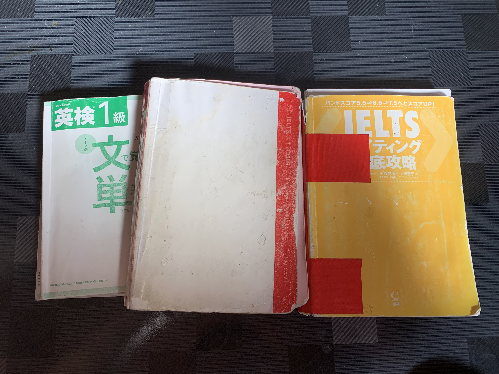
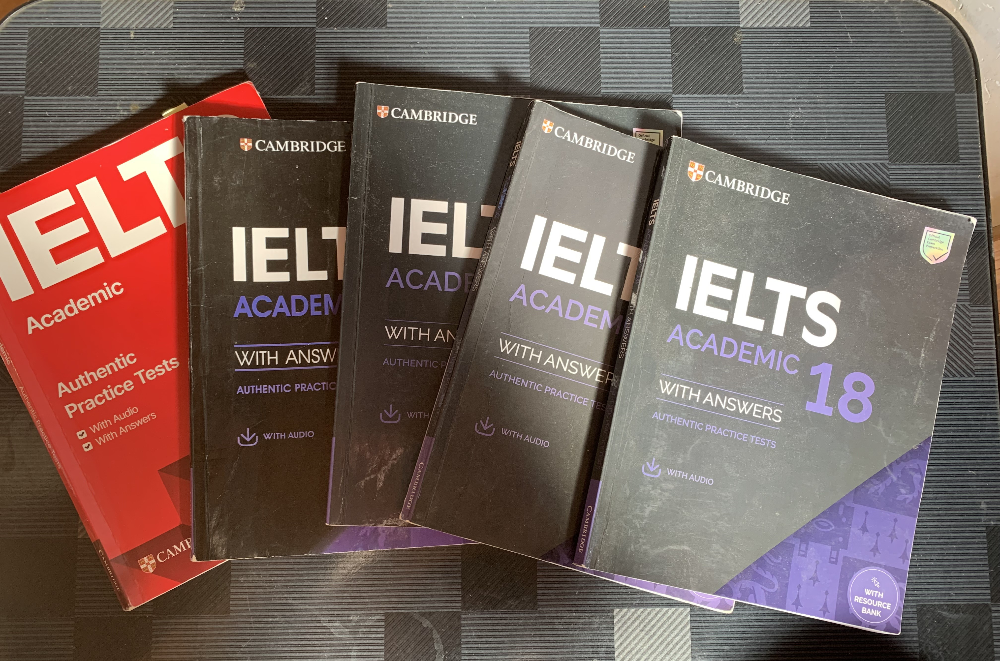
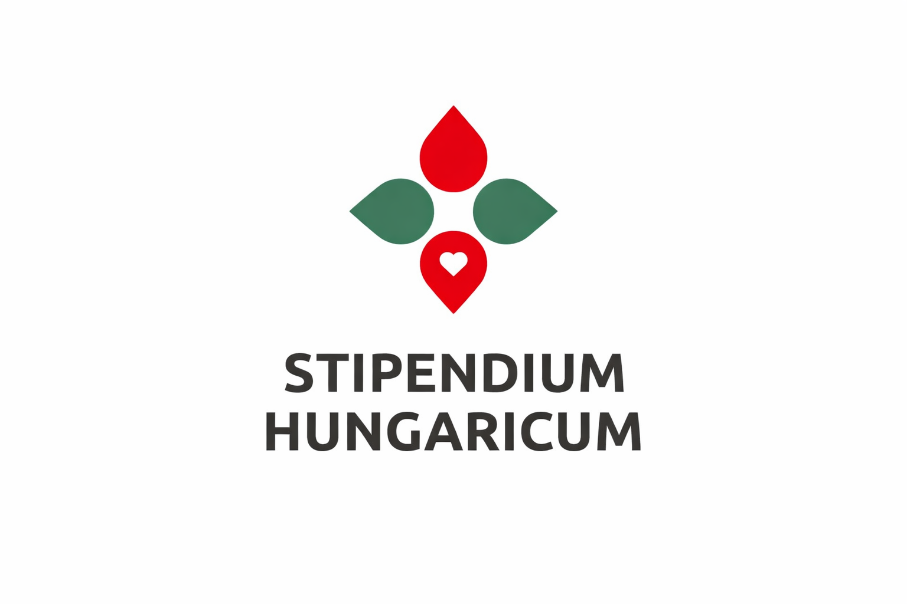
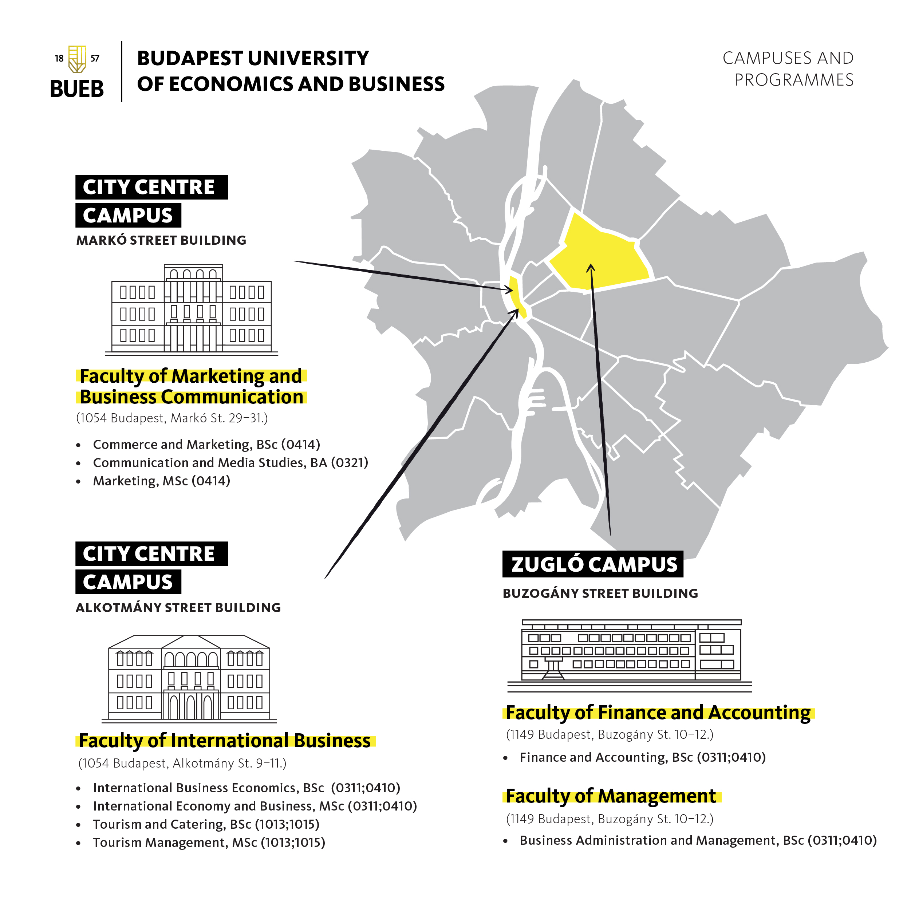

なぜ私はハンガリーの大学院を選んだのか
こんにちは。ハンガリー留学ラボのカネコです。
前回のコラムでは、私が34歳で仕事を辞め、観光学を学ぼうと思った理由について書きました。
AIではなく、人間だからこそ提供できる価値とは何か。その答えを探す中で、私はホスピタリティと観光という分野にたどり着きました。
しかし、次に考えなければならなかったのは、「どこの国で学ぶのか」という問題でした。
実は、最初からハンガリーを目指していたわけではありません。
前編をまだ読んでいない方は、こちらからご覧いただけます。
憧れだった欧米留学と、直面した現実
最初からハンガリーを第一志望にしていたわけではありませんでした。むしろ、当時の私の中に「ハンガリーの大学院へ進学する」という選択肢はほとんどありませんでした。
私が憧れていたのは、アメリカやイギリス、ドイツといった、長年にわたって世界の文化や経済をリードしてきた国々です。
製薬会社で働いていた頃、論文を調べる機会が多くありましたが、インパクトファクターの高い医学誌や引用数の多い研究は、こうした国々の大学や研究機関から発表されるものが非常に多く、「いつか自分もそこで学んでみたい」という思いを持つようになりました。
長年英語を勉強してきたのも、いつかそうした国で学びたいという思いがあったからです。特にイギリスやドイツの大学院への進学を目指し、英語の勉強や出願準備を続けていました。


しかし、まだ合格する前から、留学後の生活について大きな不安を感じるようになりました。
世界的なインフレに加え、歴史的な円安。学費だけでなく、家賃や食費などの生活費を調べ、自分の貯金と照らし合わせてみると、ある疑問が浮かびました。
合格することだけを目標にしても、途中で資金が尽きてしまえば意味がありません。
しかも私は、学生時代に生活苦から一時的に借金を抱えた経験があります。お金が足りない状態で生活するストレスは想像以上に大きく、学業に集中できなくなることも身にしみて知っていました。
その経験があったからこそ、留学先を選ぶうえで、単に「合格できるか」だけではなく、「卒業まで経済的に無理なく生活できるか」を重視するようになりました。
そこで私は、イギリスやドイツへの出願準備を続けながら、より現実的に留学できる国や大学院も探し始めました。
ハンガリーという選択肢との出会い

その中で知ったのが、ハンガリー政府が世界各国の留学生を対象に提供している「スティペンディウム・ハンガリカム（Stipendium Hungaricum）」奨学金でした。
授業料が免除されるだけでなく、毎月の生活費手当と、学生寮または住居費補助も用意されています。
最初は「ハンガリーに、こんなに手厚い奨学金があるのか」という驚きから調べ始めました。
当時の私にとってハンガリーは、憧れの留学先というよりも、資金面で無理をせず海外の大学院で学ぶために見つけた「現実的な選択肢」でした。
なぜBUEB（ブダペスト商科大学）だったのか

ハンガリーの大学を調べ始めてからも、「学べればどこでもいい」とは考えていませんでした。
私が重視したのは、大学全体の知名度ではなく、自分が学びたい「Tourism Management」という分野の質です。
大学をリサーチする中で、現在のBUEBが「Budapest Business School（BBS）」という名称で知られていた頃、Faculty of Commerce, Hospitality and Tourism（商学・ホスピタリティ・観光学部）が、ハンガリー国内の観光・ホスピタリティ分野の専攻別ランキングで1位になっている情報を見つけました。
このランキングは、ハンガリーの教育メディア『HVG Diploma』のデータ等を基準に、国内のturizmus-vendéglátás（観光・ホスピタリティ課程）を比較したものです。
第一志望者数、入学者の平均入試点、語学資格を持つ学生の割合などで高い評価を受け、第一志望者数・学術競技入賞者数ともに国内トップクラスの実績を誇っていました。
そう確信しました。
30代の留学だからこそ響いた「実践的カリキュラム」
もう一つ強く惹かれたのが、BUEBの実践的なカリキュラムでした。
30代になって大学院へ進学する以上、単に教科書上の理論を丸暗記するのではなく、実際の社会課題に向き合いながら学びたいと思っていました。
若い頃と違って年齢を重ねるほど、単なる暗記は頭に入りづらくなります。何より私自身、「なぜこれが必要なのか」という目的や実践での使い道が見えない知識は、なかなか身につかない性格でした。
だからこそ、学んだことを現実の課題と結びつけながら活用できる環境が自分には合っていると考えました。
BUEBでは、企業や観光地が抱える実際の課題を扱うプロジェクトが、日々の授業だけでなく修士論文や最終試験にまで組み込まれています。
「知識を覚えること」ではなく、「知識を使って課題を解決すること」。
その教育方針が、自分の求める学びと合致しました。
ヨーロッパの中心という立地が育む「現地での学び」
さらに、ハンガリーはヨーロッパのほぼ中央に位置し、シェンゲン協定加盟国でもあります。
ドイツやイタリア、フランス、スペインなどへも比較的気軽に足を運ぶことができます。
私は観光を学ぶ以上、教室の中だけではなく、実際にさまざまな国を訪れ、自分の目で街並みや文化、観光地を見ることも重要な学びの一部だと考えています。
一つの国の中だけに閉じこもるのではなく、周辺国の多様な観光地を比較しながら学べる環境は、地理的にも優位なハンガリーならではの大きな魅力でした。


おわりに
振り返ってみると、私は「国のブランド」や「世間のイメージ」だけで進学先を決めたわけではありませんでした。
大切だったのは、
- 自分は一体何を学びたいのか
- その学びを最後まで走りきれる環境はどこなのか
ということでした。結果として、その答えがハンガリーであり、BUEBでした。
実は、大学院の面接試験やモチベーションレターでも、ここに書いたようなこれまでのキャリアや葛藤、そしてハンガリーを選んだ現実的な理由を、そのまま包み隠さず伝えました。
無事に合格できた最大の理由は、自分の人生や価値観、そして「これからやりたいこと」の間に一切のブレがなかったからだと感じています。
企業面接で時折感じてしまうような、取り繕った言葉や表面的な嘘をつく後ろめたさがなく、心から納得している選択だからこそ、堂々と自分の言葉で語ることができました。
憧れだけで進学先を選ぶのではなく、自分の目的と現実の両方を見つめて選んだからこそ、今でもこの選択は間違いではなかったと胸を張って言えます。
参考資料・データ出典
- HVG Diploma（Gazdasági alapszakok rangsora）
- Eduline「Gazdasági alapszakok rangsora」
- ELTE UnivPress Ranking
- Budapest University of Economics and Business（BUEB）公式サイト